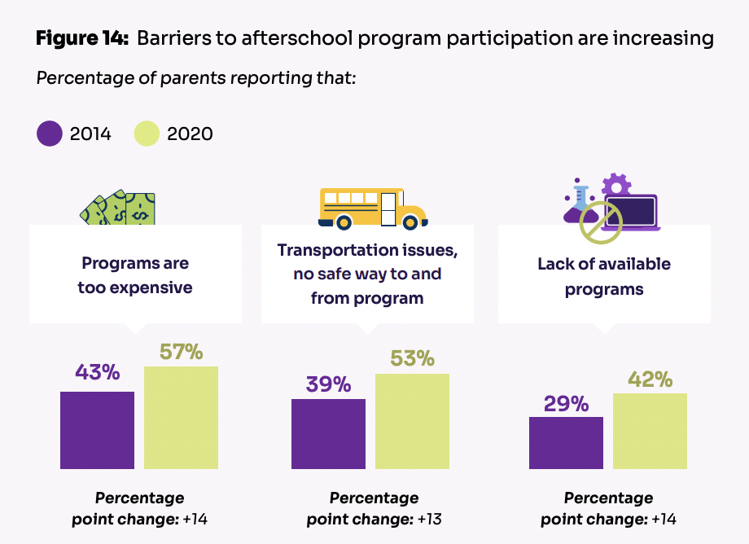

Conrad's Article

access to after school stem program is very important to kids educational freedom, and future financial freedom.
57% of parents said that after school STEM programs where to expensive. this impacts students in low income households because after school STEM can be very expensive with traveling to competitions and registration costs
53% of parents said that transportation issues/no safe way of getting home after school. this impacts low income family because they might not have enough money to buy a car so takeing the bus is the only way to get to and from school.
42% said that there was a lack of available programs in there schools. this mainly impacts students in low income households, because they don't have the opportunity to go and participate is out of school STEM activities.
2020 Progress Report on the Implementation of the Federal STEM EducationThis shows the government's attempts to increase STEM education in the US. This document shows the progress they made, how much money they are spending, where it is going and what they hope it will achieve. while this is a good first step it dose not talk about how they will get kids to participate in STEM activity so the impact this has is limited.